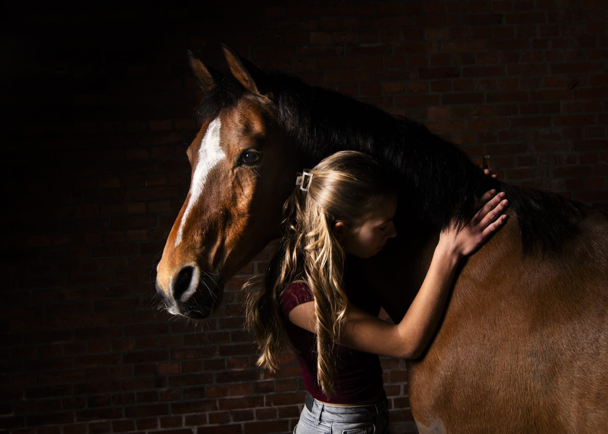
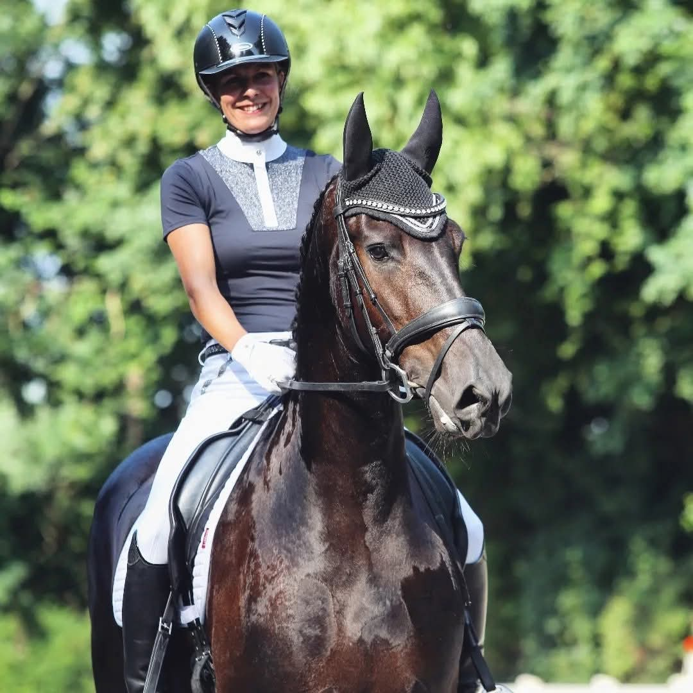

01
Gedragstraining
Begrijp wat je paard je vertelt. We onderzoeken samen de oorzaak van gedrag en werken rustig aan meer vertrouwen en ontspanning.
Meer over gedragstraining
Persoonlijke paardentraining
Een ontspannen paard begint bij echt begrijpen. Met rust, aandacht en training op maat vinden jullie samen de weg vooruit.
Ontdek de trainingen
Ik ben Ineke
Paarden lopen al van jongs af aan als een rode draad door mijn leven. In de loop der jaren hebben verschillende paarden en bijzondere mensen mijn pad gekruist. Ieder paard heeft mij op zijn eigen manier iets geleerd en mij gevormd tot wie ik vandaag ben, zowel als ruiter als in mijn werk met paarden en hun eigenaren.
Mijn nieuwsgierigheid naar paarden, hun gedrag en de samenwerking tussen mens en paard heeft mij altijd gedreven om mezelf verder te ontwikkelen. Daarom heb ik de driejarige opleiding Instructeur Paard en Gedrag (ORUN 3) via E-quine succesvol afgerond.
Met de kennis en ervaring die ik heb opgedaan, help ik paarden en hun eigenaren om elkaar beter te begrijpen, vertrouwen op te bouwen en samen te groeien.
Lees meer over mijn verhaal en de ervaringen die mij hebben gevormdWaar kan ik bij helpen?
Begrijp wat je paard je vertelt. We onderzoeken samen de oorzaak van gedrag en werken rustig aan meer vertrouwen en ontspanning.
Meer over gedragstrainingMet geduld en duidelijke stappen maken we van laden een prettige ervaring. Zonder haast, met oog voor wat je paard aankan.
Meer over trailerladenVersterk jullie communicatie vanaf de grond. Met praktische oefeningen bouwen we aan aandacht, balans en wederzijds vertrouwen.
Meer over grondwerkVan het leren dragen van een halster tot de eerste kennismaking met het zadel begeleid ik jonge paarden stap voor stap. Met rust, geduld en duidelijke communicatie bouwen we aan een fijne basis voor de toekomst.
Meer over jonge paarden →Met afwisselende obstakels leert je paard nieuwe situaties met meer vertrouwen tegemoet te treden. De obstakeltrainingen vinden plaats op vaste data en deelname is mogelijk via inschrijving.
Meer over obstakeltraining →Helder en persoonlijk
Iedere hulpvraag is anders. Daarom bespreek ik vooraf graag wat er speelt, wat jullie nodig hebben en welk traject daarbij past.
Vraag naar de mogelijkheden€55,- per uur
Incl. gebruik trainingsmaterialen.
Excl. reiskosten
Stap voor stap
Een fijne training begint met luisteren. Samen kijken we wat nodig is en maken we een plan dat past bij jullie.
Je vertelt wat er speelt en waar je tegenaan loopt. We bespreken rustig of ik de juiste persoon ben om jullie te helpen.
Samen maken we een realistisch en persoonlijk plan dat aansluit bij jullie doelen en omstandigheden. Zo werken we stap voor stap aan de juiste oplossing.
Met haalbare oefeningen gaan we aan de slag. Je krijgt praktische handvatten om tussendoor nóg meer te kunnen bouwen aan vertrouwen.
Jullie volgende stap begint hier
Vertel me over jou en je paard. Dan kijken we samen wat een passende eerste stap kan zijn. Vermeld daarbij ook je telefoonnummer, zodat ik eventueel via WhatsApp contact met je kan opnemen om een afspraak in te plannen.
Stuur Ineke een bericht Vrijblijvend kennismaken, zonder haast.